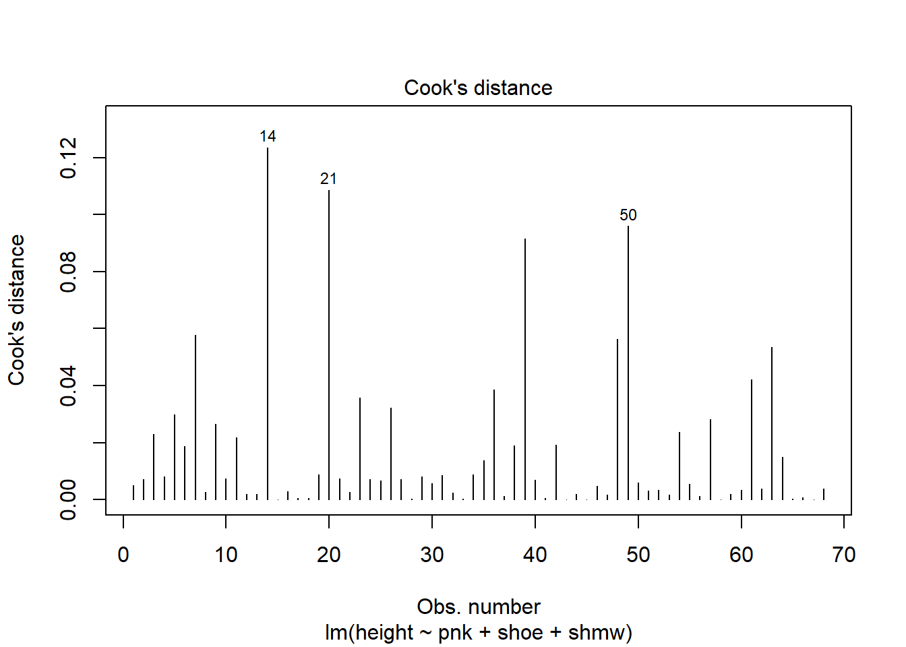

The code below imports into R a data set containing the self-reported heights (in feet and inches), lengths of index and pinky fingers (in millimeters), shoe size, and shoe size gender (“m”/“w”) of several statistics students. The code then removes an observation with shoe size gender given as “uk” and adds to the data set a column containing the heights in centimeters.
# import the datalink <-url("https://gregorkb.github.io/data/height_length_index_pinky_shoesize_combined.csv")hl0 <-read.table(link,sep=",",header=T)# remove a "uk" show sizermv <-which(hl0$shmw =="uk")hl <- hl0[-rmv,]# convert ft and in. to centimeter heightshl$height <- (hl$ft*12+ hl$in.)*2.54# view the first few rows of the data framehead(hl)
ft in. ind pnk shoe shmw class height
1 5 4 75 65 8.0 w STAT_516_sp_2026 162.56
2 5 4 70 56 7.0 w STAT_516_sp_2026 162.56
3 5 8 70 52 10.0 w STAT_516_sp_2026 172.72
4 5 5 68 62 7.5 w STAT_516_sp_2026 165.10
5 5 6 71 55 9.5 m STAT_516_sp_2026 167.64
6 6 4 78 65 13.0 m STAT_516_sp_2026 193.04
It is of interest to use the multiple linear regression model to predict the height of a person based on his or her index and pinky finger lengths, shoe size, and shoe size gender “m” or “w”.
1.
Consider the multiple linear regression model which uses all the covariates—the index and pinky finger lengths, shoe size, and shoe size gender—to predict the height of a person.
lm_full <-lm(height ~ ind + pnk + shoe + shmw, data = hl)alpha <-0.05p <-4n <-nrow(hl)Fcrit <-qf(1-alpha,p,n-(p+1))Fcrit
[1] 2.51767
summary(lm_full)
Call:
lm(formula = height ~ ind + pnk + shoe + shmw, data = hl)
Residuals:
Min 1Q Median 3Q Max
-11.1911 -2.4660 0.2083 3.3303 9.9596
Coefficients:
Estimate Std. Error t value Pr(>|t|)
(Intercept) 127.0611 7.6453 16.620 < 2e-16 ***
ind 0.1489 0.1602 0.929 0.356
pnk 0.1562 0.1503 1.040 0.303
shoe 3.0248 0.3969 7.622 1.64e-10 ***
shmww -7.9098 1.3934 -5.677 3.73e-07 ***
---
Signif. codes: 0 '***' 0.001 '**' 0.01 '*' 0.05 '.' 0.1 ' ' 1
Residual standard error: 4.597 on 63 degrees of freedom
Multiple R-squared: 0.8358, Adjusted R-squared: 0.8254
F-statistic: 80.17 on 4 and 63 DF, p-value: < 2.2e-16
library(car)
Warning: package 'car' was built under R version 4.6.1
Loading required package: carData
Warning: package 'carData' was built under R version 4.6.1
vif(lm_full)
ind pnk shoe shmw
3.249869 2.816658 1.909865 1.560264
1.a
Give the critical value for the overall F test at significance level . This the value such that when it is exceeded by the value of the test statistic we reject at .
The critical value for the overall F test at significance level 0.5 is 2.51767
1.b
Fit the model and give the value of the test statistic for the overall F test of significance as well as the p-value associated with it. Give an interpretation of these values.
The overall f stat is 80.17 and the p value is < 2.2e-16. because the p value is less that 0.05 we reject the null hypothesis. There is evidence that at least one of the four covariates is significantly related to height.
1.c
Report the variance inflation factor for each of the four covariates.
The variance factors: ind=3.249869, pnk=2.816658, shoe= 1.909865, shmw=1.560264
2.
Fit a model with all covariates except the shoe size gender covariate.
lm_red <-lm(height ~ ind + pnk + shoe, data = hl)SSE_full <-sum(lm_full$residuals^2)SSE_red <-sum(lm_red$residuals^2)Ftest <- ((SSE_red - SSE_full)/1) / (SSE_full/(n-(p+1)))Ftest
[1] 32.22543
pval <-1-pf(Ftest,1,n-(p+1))pval
[1] 3.73342e-07
2.a
Use the full-reduced model F test to test whether the shoe size gender covariate has a nonzero regression coefficient in the full model. Give the value of the test statistic as well as the p value. Interpret the result of your test.
The full-reduced f stat is 32.22543 and the pvalue is 3.73342x10^-7. since the p value is less than 0.05 we reject the null hypothesis. there is evidence that shoe size gender has nonzero coefficeient in the full model.
2.b
Obtain the value of the test statistic and the p value associated with it for testing : versus : where is the index of the shoe size gender covariate.
The t static for shoe size gender is -5.677 with p-value of 3.73x10^-7 since the p value is less than 0.05 we reject the null hypothesis and conclude that shoe size gender is related to height when the other covariates are included in the model.
2.c
Explain the relationship between the value of the test statistic of the full-reduced model F test when one considers the removal of a single covariate with the test statistic for testing whether a single covariate is significantly related to the response.
The f test stat from part a is approximately equal to the square of t test statistics from part b. specifically (-5.677)^2 =32.23 which is approximately equal to the f stat of 32.22543. the two tests also have approximately the same p-value and therefore give the same conclusion.
3.
Fit a model using only the two shoe size covariates.
Use the full-reduced model F test to test whether either of the finger length variables has a nonzero regression coefficient in the full model. Give the value of the test statistic as well as the p value. Interpret the result of your test.
the full reduced f test stat is 3.179345 and the pvalue is 0.04836705. because the p value is less than 0.05 we reject the null hypothesis. There is evidence that at least one of the two finger length has non-zero coefficient.
3.b
Compute the variance inflation factors of the two variables in this model. Comment on how these compare to their counterparts in the model with all four covariates.
in the model containing only the two shoe size covariates the VIF for shoe is 1.483552 and the VIF for shmw is 1.483552. in the full model their vifs were 1.909865 and 1.560264 respectively. Therefore both VIFs are lower in the reduce model.
3.c
Comment on anything else interesting about these two variance inflation factors!
The two VIFs are equal. This occurs because there are only two predictor variables. so each VIF is based on its relationship with the same single other predictor.
4.
Fit a model using only the index and pinky finger lengths.
lm_finger <-lm(height ~ ind + pnk, data = hl)SSE_full <-sum(lm_full$residuals^2)SSE_red <-sum(lm_finger$residuals^2)Ftest <- ((SSE_red - SSE_full)/2) / (SSE_full/(n-(p+1)))Ftest
[1] 73.10892
pval <-1-pf(Ftest,2,n-(p+1))pval
[1] 0
4.a
Give the value of the test statistic and the p value for the full-reduced model F test for testing whether either of the two shoe size covariates has a nonzero regression coefficient in the full model. Interpret the result.
the full reduced f stat is 73.10892 and the p value is approximately 0. Since the p value is less than 0.05 the null hypothesis is rejected. there is evidence that at least one of the two shoe size covariates has a non zero coefficient in the full model
4.b
Suppose the index and pinky finger measurements were recorded in centimeters instead of millimeters. Describe the effect this would have on the value of the test statistic in the previous part as well as on the p value.
chnaging the finger measurements from mm to cm would not chnage the f stat or the p value. changing units only changes the scale not the predictor variables and the coefficients so the f test remains the same.
5.
5.a
Give the model chosen by backward selection based on the AIC criterion.
lm_all <-lm(height ~ ind + pnk + shoe + shmw, data = hl)step_back <-step(lm_all,direction ="backward",scope =formula(lm_all))
Call:
lm(formula = height ~ pnk + shoe + shmw, data = hl)
Residuals:
Min 1Q Median 3Q Max
-10.8548 -2.5555 0.0139 3.2386 10.2005
Coefficients:
Estimate Std. Error t value Pr(>|t|)
(Intercept) 131.2502 6.1689 21.276 < 2e-16 ***
pnk 0.2533 0.1080 2.347 0.0221 *
shoe 3.1182 0.3835 8.131 1.90e-11 ***
shmww -8.1219 1.3731 -5.915 1.42e-07 ***
---
Signif. codes: 0 '***' 0.001 '**' 0.01 '*' 0.05 '.' 0.1 ' ' 1
Residual standard error: 4.592 on 64 degrees of freedom
Multiple R-squared: 0.8335, Adjusted R-squared: 0.8257
F-statistic: 106.8 on 3 and 64 DF, p-value: < 2.2e-16
using the backward selection based on aic the selected model is: height ~ pnk + shoe + shmw. the variable ind was removed from the model. the final model has an AIC of 211.20
5.b
Give the model chosen by forward selection based on the AIC criterion.
lm_none <-lm(height ~1, data = hl)step_forw <-step(lm_none,direction ="forward",scope =formula(lm_all))
Call:
lm(formula = height ~ shoe + shmw + pnk, data = hl)
Residuals:
Min 1Q Median 3Q Max
-10.8548 -2.5555 0.0139 3.2386 10.2005
Coefficients:
Estimate Std. Error t value Pr(>|t|)
(Intercept) 131.2502 6.1689 21.276 < 2e-16 ***
shoe 3.1182 0.3835 8.131 1.90e-11 ***
shmww -8.1219 1.3731 -5.915 1.42e-07 ***
pnk 0.2533 0.1080 2.347 0.0221 *
---
Signif. codes: 0 '***' 0.001 '**' 0.01 '*' 0.05 '.' 0.1 ' ' 1
Residual standard error: 4.592 on 64 degrees of freedom
Multiple R-squared: 0.8335, Adjusted R-squared: 0.8257
F-statistic: 106.8 on 3 and 64 DF, p-value: < 2.2e-16
using forward selection based on AIC the selected model ins height ~ shoe + shmw + pnk. the variables were added in order shoe, shmw, and pnk. the final model has an AIC of 211.2
6.
Considering your “best” model, check whether there are any outlying observations.
plot(step_back, which =4)

using the model selected by AIC, observations 14, 21, and 50 appear the most influential. observation 14 has the largest cooks distance folloowed by 21 and 50. these observations may be potential outliers or influential observations and should be investigated some more.